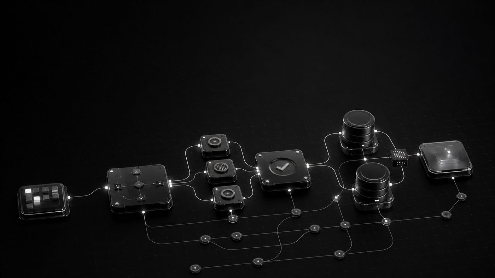

Anfragen & Aufträge
Formulardaten prüfen, richtig zuweisen, Aufgaben erstellen und Eingangsbestätigungen versenden.
Anfragen übertragen, Daten abgleichen, Freigaben einholen oder Teams informieren: Wir entwickeln Systeme, die klar definierte Arbeitsschritte zuverlässig ausführen.
Klein starten Klare Regeln Bestehende Systeme verbinden

Nicht möglichst viel, sondern den richtigen Ablauf. Entscheidend sind Wiederholung, klare Regeln und ein messbares Ergebnis.
Formulardaten prüfen, richtig zuweisen, Aufgaben erstellen und Eingangsbestätigungen versenden.
Unterlagen erzeugen, verantwortliche Personen einbeziehen und offene Entscheidungen nachverfolgen.
Erinnerungen auslösen, Statusänderungen kommunizieren und Teams nur bei Abweichungen informieren.
Informationen zwischen Systemen synchronisieren und wiederkehrende Übersichten automatisch bereitstellen.
Jede Automatisierung bleibt prüfbar. Zuständigkeiten, Ausnahmen und Fehlermeldungen gehören von Anfang an zum System.
Eine Anfrage, ein Termin, eine Datei oder eine Statusänderung startet den Ablauf.
Regeln kontrollieren Daten, Zuständigkeit und notwendige Freigaben.
Systeme werden aktualisiert, Dokumente erstellt oder Nachrichten versendet.
Das Ergebnis wird protokolliert; Ausnahmen landen bei der richtigen Person.
Wir prüfen zuerst, welche Werkzeuge dein Betrieb bereits nutzt und wo Daten heute manuell weitergetragen werden.
Welche Verbindung technisch sinnvoll ist, klären wir vor der Offerte. Wir versprechen keine Integration, bevor die vorhandenen Schnittstellen geprüft sind.
Ein zuverlässiger Ablauf braucht nicht automatisch künstliche Intelligenz. Wir trennen beides bewusst.
Wenn Eingang, Prüfung und Ergebnis klar definiert sind, ist klassische Automatisierung kontrollierbar und effizient.
KI kann Texte einordnen, Informationen extrahieren oder Entwürfe formulieren. Kritische Entscheidungen bleiben nachvollziehbar abgesichert.
Du brauchst kein technisches Pflichtenheft. Wir nehmen den heutigen Ablauf gemeinsam auseinander.
Geeignet sind klar wiederkehrende Abläufe: Anfragen übertragen, Aufgaben erstellen, Freigaben einholen, Erinnerungen versenden, Daten abgleichen oder Auswertungen bereitstellen.
Nicht zwingend. Wenn geeignete Schnittstellen vorhanden sind, verbinden wir bestehende Systeme. Ein neues Werkzeug entsteht nur dort, wo eine klare Lücke besteht.
Nein. Eindeutige Regeln sind oft günstiger und kontrollierbarer. KI ergänzen wir nur, wenn Inhalte verstanden, geordnet oder formuliert werden müssen.
Wir zeichnen zuerst den heutigen Ablauf auf, bestimmen Ausnahmen und definieren danach einen kleinen, messbaren ersten Umfang mit klarer Offerte.
Zeig uns den heutigen Prozess. Wir sagen ehrlich, was sich sinnvoll automatisieren lässt und wo Handarbeit die bessere Lösung bleibt.